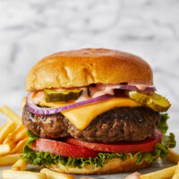

Let's Make the Perfect Burger!
Don't panic! Shaping the meat patties and broiling them to the perfect temperature might actually be exciting for you.

1. It's Time to Touch Raw Meat
First, divide the meat into 4 even pieces. Shape each piece into a ball, then gently press each one into a ¾-inch-thick patty.
Be careful not to overhandle, squeeze, or smash the meat, because this can make your burgers tough. Slightly flatten the center of each patty since burgers tend to plump up in the middle while cooking. If the edges crack, gently press them back together.
2. Season the Patties
Measure ¼ teaspoon of salt and sprinkle it over the tops of the patties. Then season them with ⅛ teaspoon of black pepper.
Turn the patties over and season the other side with the remaining salt and pepper. Refrigerate the patties on a plate until you're ready to cook.
3. Prepare Your Toppings
Get all of your favorite toppings ready while you prepare to cook your burgers.
4. Broil the Burgers
Heat the broiler with the oven rack about 4 inches from the top. Place your patties on a broiler pan or rimmed sheet pan and slide them under the broiler.
Keep a close eye on them and cook until browned on the first side, about 3 to 5 minutes. Flip the patties—resist the urge to smash them down with your spatula—and cook for another 3 to 4 minutes for medium doneness.
Transfer the burgers to a plate and let them rest.
5. Toast the Buns and Build Your Burger
Split the hamburger buns open and place them cut-side up on a rimmed sheet pan. Heat them under the broiler until lightly toasted.
Build your burger with your favorite toppings and enjoy!